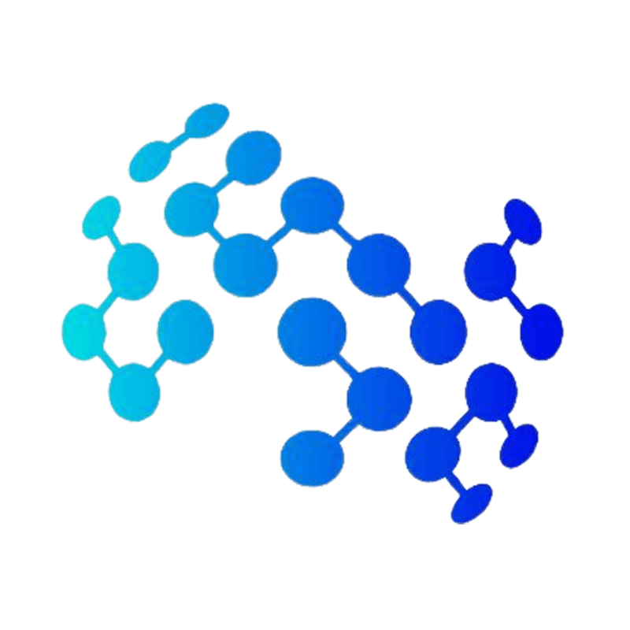

Hi, I am Yahia! I am lazy to actually write stuff here but i'll kind of get onto that later. In the meantime, feel free to explore this website and my previous publications!
Publications
Veli: Unsupervised Method and Unified Benchmark for Low-Cost Air Quality Sensor Correction
Arxiv (pre-print)
Paper | Code (Dataset) | Code (Model) | Dashboard Demo
We introduce Veli (Reference free Variational Estimation via Latent Inference), an unsupervised Bayesian model that leverages variational inference to correct LCS readings without requiring co-location with reference stations, eliminating a major deployment barrier. We also introduce the Air Quality Sensor Data Repository (AQ-SDR). AQ-SDR is the largest AQ sensor benchmark to date, with readings from 23,737 LCS and reference stations across multiple regions.
Transradar: Adaptive-directional transformer for real-time multi-view radar semantic segmentation
WACV 2024
In this work, we propose a novel approach to the semantic segmentation of radar scenes using a multi-input fusion of radar data through a novel architecture and loss functions that are tailored to tackle the drawbacks of radar perception.
RadarFormer: Lightweight and Accurate Real-Time Radar Object Detection Model
SCIA 2023
In this work, we propose a novel approach to the semantic segmentation of radar scenes using a multi-input fusion of radar data through a novel architecture and loss functions that are tailored to tackle the drawbacks of radar perception.
Education
-
PhD - Informatics Institute, University of Amsterdam 2024 - Present Thesis: Community-Empowered AI and Visual Analytics for Public Health
-
Master of Science in Computer Vision - MBZUAI 2021 - 2023 Thesis: Object Detection and Semantic Segmentation on Radar Frequency Signals
